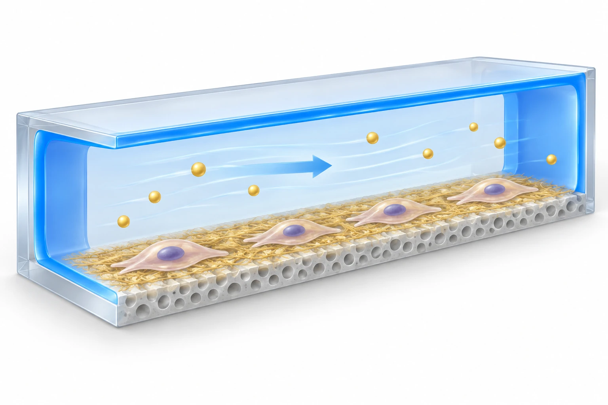

이 연구가 다루는 문제
윤활 처리한 채널 벽으로 약물 손실을 줄이고, 별도의 세포 지지막에서는 필요한 세포 부착을 유지하는 체외 장기칩입니다. 장과 혈액뇌장벽 모델을 통해 이런 표면 설계가 약물 노출과 생물학적 판독에 미치는 영향을 살폈습니다.
체외 장기칩의 약물 손실과 세포 배양면
PDMS 미세유체 채널은 작은 분자를 흡수해 배양 세포에 도달하는 약물 농도를 바꿀 수 있습니다. 한편 세포는 붙어서 자랄 표면이 필요합니다. 이 연구는 약물이 흐르는 채널 벽과 세포를 지지하는 막에 서로 다른 기능을 부여합니다.
어떻게 접근했나요?
윤활 처리한 채널 벽은 비특이적인 약물 손실을 줄이고, 반투과성 PET 막의 세포외기질(ECM) 코팅은 세포 배양을 돕습니다. 영역을 나누어 약물 경로에서는 불필요한 부착을 줄이고, 세포 배양부에서는 필요한 부착을 지원합니다.

AI 생성 개념도입니다. PreD의 윤활 채널 벽과 ECM 코팅 PET 막이 맡는 서로 다른 역할을 설명합니다. 하나의 채널만 단순화했으며 약물 회수 측정, 독성 예측, 장기 기능의 결과를 제시하지 않습니다.
아래쪽 채널은 생략했습니다. 확대된 기공, 막 두께, ECM 섬유, 세포, 용질은 기호이며 실제 기공 구조, 세포 형태, 농도, 흐름장을 나타내지 않습니다. 금색도 설명용 색으로 금속을 뜻하지 않습니다.
논문 원그림을 복제한 이미지가 아니며, 원그림 재사용 허가를 의미하지 않습니다.
무엇을 어떻게 평가했나요?
세포가 없는 칩의 형광·약물 회수 시험은 유체 경로에서의 손실을 측정합니다. 장 독성과 혈액–뇌 장벽 수송 시험은 세포가 있는 칩의 생물학적 반응을 살펴봅니다. 약물 회수율이 높아졌다고 해서 모델의 임상 예측력이 입증되는 것은 아닙니다.
주요 결과
장 모델의 DEX 농도별 시험에서 유량과 노출 조건을 맞추었을 때 PreD는 기존 칩보다 낮은 IC50을 보였습니다. IC50은 반응이 절반 수준으로 억제되는 농도를 나타냅니다. 기기에서의 약물 손실 감소가 독성 측정값에 영향을 줄 수 있음을 보여 주지만, 이 결과는 DEX와 Caco-2 세포 조건에 해당하며 모든 약물의 임상 독성 예측을 검증하지는 않습니다.
아직 남아 있는 질문
분자 특성, 농도, 유량, 노출 시간, 세포와 막의 조건을 맞춰 비교해야 합니다. 코팅 내구성과 더 다양한 약물의 회수 성능도 추가 평가가 필요합니다. 저자들도 임상 예측력의 검증을 요구하므로, 임상 시험을 대체할 수 있는 검사로 확립된 것은 아닙니다.
함께 읽을 연구
PDMS absorption of small molecules and consequences in microfluidic applications
Toepke와 Beebe는 작은 분자가 PDMS로 이동해 농도가 달라지는 문제를 설명합니다. PreD는 채널 코팅과 분리된 세포 배양 영역으로 대응합니다.
외부 초록은 문제의 배경을 설명하지만 모든 분자에서 손실이나 코팅 효과가 같음을 보여 주지는 않습니다.
초록을 참고한 소개RESEARCH NEWS
연구 소식
해설에 사용한 자료
공개 Wiley 본문의 약물 회수, 장·혈액–뇌 장벽 모델, 결론 중 일부를 읽었습니다. 저자들은 임상 예측력에 추가 검증이 필요하다고 밝힙니다. 보충자료 전체를 읽은 범위는 아닙니다.